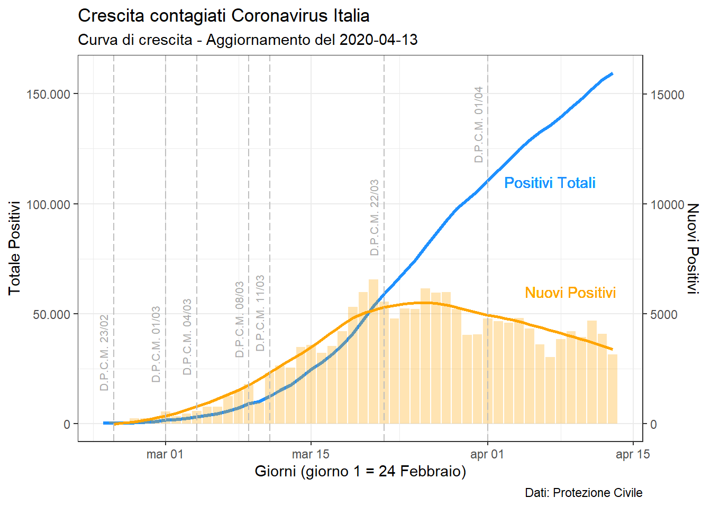

library(dplyr)
library(drc)
library(lubridate)
library(ggplot2)
theme_set(theme_bw())
# get the data
covid_italy_sum <- read.csv("https://raw.githubusercontent.com/pcm-dpc/COVID-19/master/dati-andamento-nazionale/dpc-covid19-ita-andamento-nazionale.csv")x <- 1:50
cov_tot <- rep(NA,50)
gg <- length(covid_italy_sum$totale_casi)
cov_tot[1:gg] <- covid_italy_sum$totale_casi
xy <- data.frame(x=x,y=cov_tot)# fitting logistico
model <- drm(y ~ x, fct = L.3(), data = xy[1:gg,])# prediction
xy_fit <- predict(model,xy,interval = 'confidence') %>%
data.frame() # plot fitting
ggplot(xy_fit,aes(x=1:50,y=Prediction)) +
geom_line() +
geom_point(colour="blue",aes(y=xy$y)) +
geom_line(aes(y = Lower), color = "red", linetype = "dashed")+
geom_line(aes(y = Upper), color = "red", linetype = "dashed")+
#-- ITALY
annotate(geom = "text", x = 5, y = 70000,
label = "Italia", hjust = 0) +
annotate("pointrange", x = 3.5, y = 70000, ymin = 69500,
ymax = 70500,colour = "blue", size = 0.7)+
#-- FIT
annotate(geom = "text", x = 5, y = 65000,
label = "Fit logistico", hjust = 0) +
annotate(geom = "segment", x = 2.5,xend = 4,
y = 65000,yend=65000) +
#-- CONF
annotate(geom = "text", x = 5, y = 60000,
label = "Intervallo di confidenza 95%", hjust = 0) +
annotate(geom = "segment", x = 2.5,xend = 3,
y = 60000,yend=60000, colour="red") +
annotate(geom = "segment", x = 3.5,xend = 4,
y = 60000,yend=60000, colour="red") +
labs(title = "Crescita contagiati Coronavirus Italia ",
subtitle = "Previsione curva di crescita",
caption = "Dati: Protezione Civile \n
#iorestoacasa",
x = "Giorni",
y = "Totale Positivi")